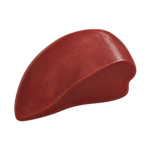
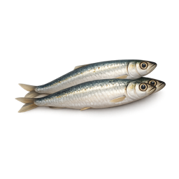
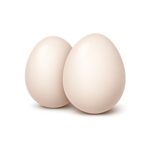
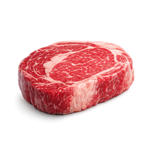
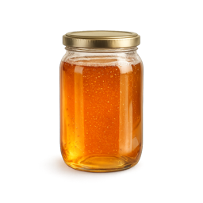

LE SCORE DE THOMAS
Mange ce que la nature te donne. Zéro industriel.
Le Nutri-Score compte les calories. Mon score regarde ce que l'aliment apporte à ton corps : ce que la nature y a mis, et ce que l'industrie y a ajouté. Tu scannes, tu as une note de S à F, et pourquoi.
Un email le jour de la sortie, c'est tout. Jamais revendu. Confidentialité

ILe même beurre, deux notes
Le Nutri-Score et mon score ne regardent pas la même chose.

Le beurreNutri-ScoreE : le gras saturé le fait tomber.
- Il calcule sur 100 g : les calories, les sucres, les graisses saturées et le sel font baisser la note ; les fibres, les protéines, les fruits et les légumes la font monter.
- Il ne regarde ni les additifs ni la transformation.
- Le gras animal le fait tomber : le beurre finit en E.
A, Excellent : il nourrit.
- D'abord ce que l'aliment apporte et que ton corps ne fabrique pas : rétinol, B12, DHA, zinc, fer héminique, créatine, K2, choline.
- Puis la transformation : classification NOVA, additifs, huiles raffinées, sucres ajoutés.
- Puis la provenance et la préparation : herbe, plein air, sauvage, fermier ; cru, fermenté, mijoté, friture.
IICe que la nature te donne
Un aliment entier d'origine animale part haut. Les notes de l'app, telles quelles.




IIIL'industriel : tolérance zéro
Additifs, huiles raffinées, sucres ajoutés : un produit ultra-transformé prend 0, quels que soient ses macros. Pas « à éviter » : à bannir.
Ce que je construis
HormOS, c'est l'app de mon accompagnement, le Protocole H4. Le scanner y est ouvert à tous : tu scannes un code-barres, tu vois la composition, les additifs, le niveau de transformation, et ma note.
Tu es prévenu en premier, le jour de la sortie. Un seul email, jamais revendu.
Nutri-Score est une marque de Santé publique France, représentée ici de façon simplifiée, à titre de comparaison. Les notes de HormOS sont celles que calcule l'app.